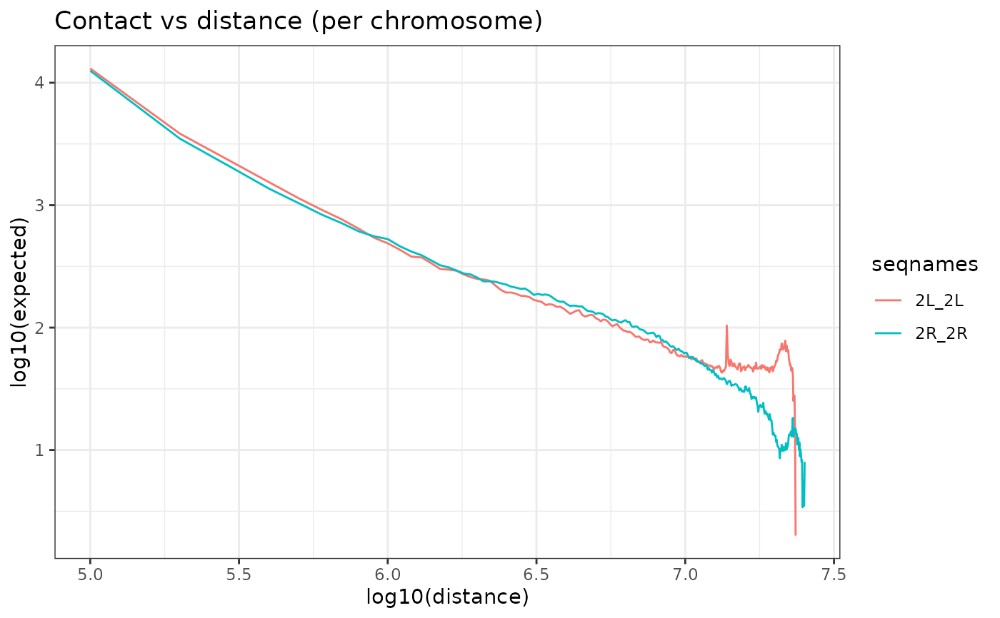

Function that normalises HiC matrices by expected values computed per genomic distance.
Usage
OverExpectedHiC(
hicLst,
method = "mean_non_zero",
verbose = FALSE,
cores = 1,
plot_contact_vs_dist = "per_seq"
)Arguments
- hicLst
<ListContactMatrix>: The HiC maps list.
- method
Options are "mean_non_zero", "mean_total", or "lieberman". Look at details for more (Default: "mean_non_zero") - verbose
: If TRUE show the progression in console. (Default FALSE) - cores
: Number of cores to be used. (Default 1) - plot_contact_vs_dist
Whether to plot contact vs distance curve per chromosome ("per_seq"), all chromosomes ("total") or not (NULL). (Default "per_seq")
Details
OverExpectedHiC
Methods to calculate expected values per distance:
"mean_non_zero": for each distance, average contact value is calculated using only non-zero values.
"mean_total": for each distance, average contact value is calculated using all values at this distance.
"lieberman": for each distance, contact values are summed and divided by chromsome length minus distance. Only for cis contacts.
Examples
# Note: run HicAggR::BalanceHiC before OverExpectedHiC calculation.
data(HiC_Ctrl.cmx_lst)
OverExpectedHiC(HiC_Ctrl.cmx_lst)

#> $`2L_2L`
#> class: ContactMatrix
#> dim: 236 236
#> type: dgCMatrix
#> rownames: NULL
#> colnames: NULL
#> metadata(6): name type ... resolution expected
#> regions: 236
#>
#> $`2L_2R`
#> class: ContactMatrix
#> dim: 236 253
#> type: dgCMatrix
#> rownames: NULL
#> colnames: NULL
#> metadata(6): name type ... resolution expected
#> regions: 489
#>
#> $`2R_2R`
#> class: ContactMatrix
#> dim: 253 253
#> type: dgCMatrix
#> rownames: NULL
#> colnames: NULL
#> metadata(6): name type ... resolution expected
#> regions: 253
#>
#> attr(,"resolution")
#> [1] 100000
#> attr(,"chromSize")
#> # A tibble: 2 × 3
#> name length dimension
#> <chr> <dbl> <dbl>
#> 1 2L 23513712 236
#> 2 2R 25286936 253
#> attr(,"matricesKind")
#> # A tibble: 3 × 4
#> name type kind symmetric
#> <chr> <chr> <chr> <lgl>
#> 1 2L_2L cis U TRUE
#> 2 2L_2R trans NA FALSE
#> 3 2R_2R cis U TRUE
#> attr(,"mtx")
#> [1] "o/e"
#> attr(,"expected")
#> # A tibble: 253 × 2
#> distance expected
#> <dbl> <dbl>
#> 1 1 44559.
#> 2 100001 12794.
#> 3 200001 3665.
#> 4 300001 2130.
#> 5 400001 1445.
#> 6 500001 1092.
#> 7 600001 876.
#> 8 700001 739.
#> 9 800001 625.
#> 10 900001 550.
#> # ℹ 243 more rows